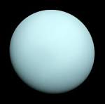

Uranus is called the boring planet because it fully surround with blue color, But it has many features it was rotates sidewase almost 90deg from its orbit. this unusal spin makes it seems as if the planet is spinning on its side and caused the most extreme seasons found in the solar system. uranus was discovered in 1781 by astronomer william herschel without a telescope. He thought it was a comet or a star. However, two years later it was recognised as a new planet by astronomer Johann Elert Bode ,who give it its name. Uranus and Venus are only two planets that rotate from east to west. in a fly -by of uranus 1986, the voyager 2 noticed discrete clouds. THE GREAT DARK SPOT and a few small dark spots. recently, more vigorous clouds and some quick changing bright features have been seen.The plant has 13 dim rings. .
